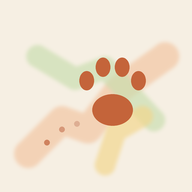

개인정보 처리방침
시행일: 2026년 10월 16일
"밝힌 동네"(이하 "앱")는 강아지와 걸은 길을 내 휴대폰 안의 동네 지도에 남기는 앱입니다. 앱에는 회원가입·로그인이 없고, 개발자가 운영하는 서버도 없습니다. 산책 기록은 휴대폰 안에만 저장되며 개발자에게 전송되지 않습니다.
1. 휴대폰 안에만 저장하는 정보
| 정보 | 쓰는 곳 |
|---|---|
| 강아지 이름 | 함께 걸은 강아지 표시, 강아지 레벨 |
| 산책 중 위치(위도·경도·시각·정확도) | 걸은 길 그리기, 거리·시간, 동네 색칠공부, 스티커 |
| 배변·소변·사진을 남긴 위치와 시각 | 지도 표시 |
| 쓰레기통으로 기억한 자리 (배변 뒤 "버렸어요"를 누른 위치와 시각) | 다음 산책에서 배변을 남기면 가까운 쓰레기통 알려 주기 |
| 산책 중 찍거나 고른 사진 (앱 안에 줄인 사본 저장) | 산책 일기 |
| 산책 시작·끝 배터리 잔량, 위치 오류 기록 | "기록 점검" |
| 설정 (주간 목표, 지도 분위기, 알림 여부) | 앱 동작 |
| 내 동네 경계·길·주변 장소 (OpenStreetMap에서 받은 것) | 동네 색칠공부, 장소 스티커 |
| 걸은 곳 둘레의 길 모양 (OpenFreeMap 지도 타일에서 받은 것) | 걸은 길을 길 모양에 맞춰 반듯하게 그리기 |
이 정보는 앱을 지우거나, 앱 안에서 산책·사진을 지우거나 "모든 기록 지우기"를 하면 삭제됩니다("모든 기록 지우기"는 강아지 이름과 설정만 남기고, 쓰레기통 자리, 내 동네 정보와 걸은 곳 둘레 길 모양, 내보내기 사본도 함께 지웁니다). 휴대폰의 기기 백업(iCloud·Google 백업)을 켜 두었다면 앱 데이터가 그 백업에 포함될 수 있습니다. 앱에서 카메라로 찍은 사진은 휴대폰 사진첩에 따로 저장되지 않습니다.
2. 기능을 위해 외부 서비스에 보내는 정보
다음 기능은 외부 서비스에 요청을 보냅니다. 이때 이름·연락처 같은 식별 정보는 보내지 않고, 위치는 아래처럼 뭉갠 좌표만 보냅니다. 인터넷 요청의 특성상 해당 서비스는 요청한 기기의 IP 주소를 볼 수 있습니다. 각 서비스는 자체 정책에 따라 요청 기록(IP 주소, 보낸 좌표 등)을 일정 기간 보관할 수 있습니다. 예를 들어 Open-Meteo는 서버 기록을 90일 뒤 지우고 제3자에게 넘기지 않는다고 밝히고 있습니다.
| 서비스 | 보내는 것 | 목적 |
|---|---|---|
| Open-Meteo (날씨·대기질) | 산책하는 동네 가운데, 산책 기록이 없으면 지금 위치를 약 1km 단위로 뭉갠 좌표 | 산책 날씨, 쉬어 간 날 판단 |
| Overpass API (OpenStreetMap 데이터) | 산책을 주로 시작하는 곳을 약 100m 단위로 뭉갠 좌표(행정동 찾기), 그 근처 약 1km 단위 범위 | 동네 색칠공부, 장소 스티커 |
| OpenFreeMap (지도 타일) | 화면에 보이는 지도 영역, 걸은 곳 둘레의 지도 조각(한 장이 약 2km, 화면을 끈 채 걷는 동안에도 받을 수 있음) | 지도 그리기, 걸은 길을 길 모양에 맞추기 |
3. 내가 직접 공유할 때
- 공유 카드: 카드 이미지는 휴대폰에서 만들어지고, 공유하기를 눌러 고른 곳으로만 보내집니다. 카드의 경로에서는 기본으로 출발·도착점과 산책을 주로 시작하는 곳(집) 둘레 200~260m를 지워 집 위치가 드러나지 않게 합니다. 카드를 만들 때 "집 근처 숨기기"를 끄면 지우지 않습니다.
- 기록 내보내기(GPX·사진): 원본 위치를 그대로 담습니다(집 근처 포함). 내가 고른 곳으로만 보내집니다.
- 기록 점검 결과 복사: 배터리·위치 품질 요약만 담고 좌표는 담지 않습니다.
4. 권한
| 권한 | 쓰는 때 |
|---|---|
| 위치 ("앱을 사용하는 동안") | 산책을 기록하는 동안. 화면을 꺼도 기록이 이어지도록 iOS 백그라운드 위치·Android 포그라운드 서비스를 씁니다. "항상 허용"은 요청하지 않습니다. "내 위치로"를 눌러 지도를 바라보는 방향으로 돌리는 동안에는 나침반(휴대폰 방향)도 쓰며, 방향은 저장하지 않습니다. |
| 카메라·사진 | 산책 중 사진을 찍거나 고를 때 (고른 사진만) |
| 알림 | 산책 확인 알림(차로 이동하는 것 같을 때, 한자리에 오래 있을 때, 산책을 켜 둔 채 잊었을 때), 월요일 "지난주 그림일기" 알림, Android 산책 중 알림. 모두 휴대폰 안에서 예약하는 알림이며 서버를 거치지 않습니다. |
| 실시간 현황 (iOS) | 산책하는 동안 잠금 화면·다이내믹 아일랜드에 걸은 거리와 시간을 보여 줄 때 |
권한은 휴대폰 설정에서 언제든 끌 수 있습니다. 위치를 끄면 산책을 기록할 수 없습니다.
5. 하지 않는 것
광고, 사용 분석 도구, 위치 추적·판매, 다른 앱과의 정보 결합을 하지 않습니다.
6. 아동
앱은 아동을 대상으로 하지 않으며, 아동의 개인정보를 따로 받지 않습니다.
7. 문의
밝힌 동네 개발자 · do2180604@gmail.com
이 방침이 바뀌면 이 페이지에 시행일과 함께 알립니다.